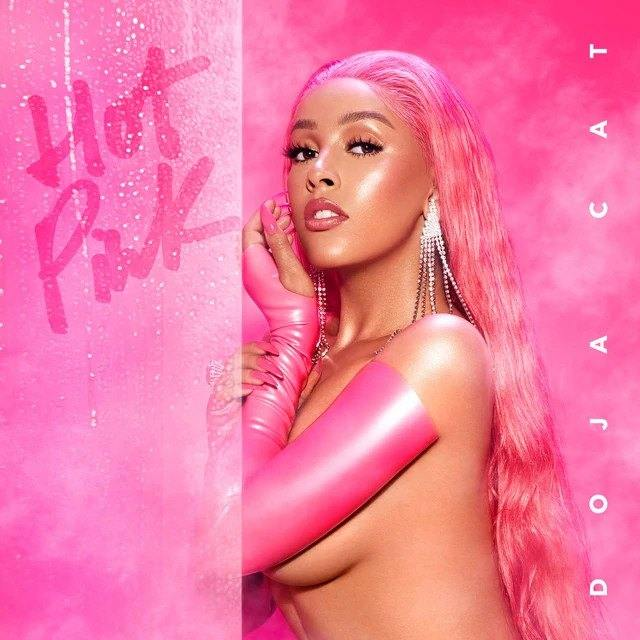

Album: Hot Pink
Released November 2019
Most played songs:
- Say So, plays ≈ 1,000,000,000
- Streets, plays ≈ 700,000,000
- Like That, plays ≈ 400,000,000
Hot Pink is the second studio album by American singer and rapper Doja Cat. It was released on November 7, 2019, by Kemosabe and RCA Records. A departure from the sound of her debut album Amala (2018), Hot Pink is a pop and R&B record containing elements of funk, hip hop and soul. It was written by Doja Cat alongside other songwriters and producers, with production from Yeti Beats and Tyson Trax. Guest vocals are contributed by Smino, Gucci Mane, and Tyga. Doja Cat's real name is Amalaratna "Amala" Zandile Dlamini. She chose the stage name Doja Cat because of her love for marijuana (doja is another name for weed, btw) and… cats.

Side One
- Cyber Sex
- Won't bite
- Rules
- Bottom Bitch
- Say So
Side Two
- Talk Dirty
- Addiction
- Streets
- Shine
- Better Than Me
- Doja wrote all of the songs on the album by herself with its producers and songwriters.
- ."I named the album 'Hot Pink' because I wanted people to feel that before they got into the music that it felt passionate, warm and welcoming," she said in a statement. "I think that the color hot pink describes those things the most."
- Doja Cat
- "Hot Pink", primarily a pop, R&B and funk album, Hot Pink's lyrical themes include sex, success, and fame, as well as Doja Cat's status.